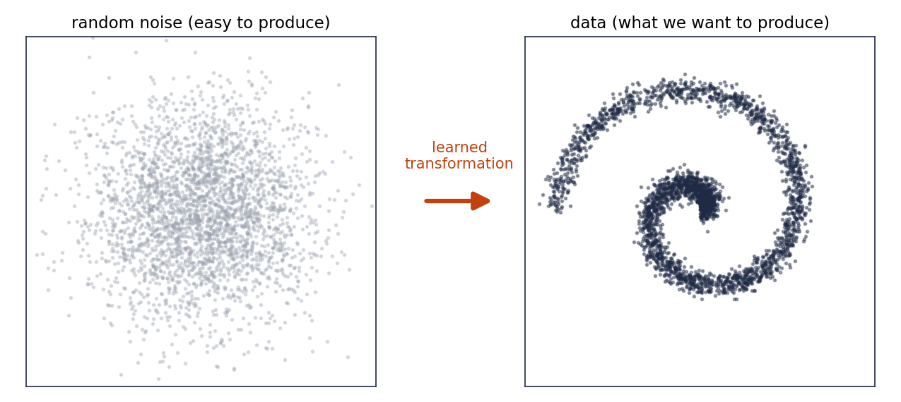
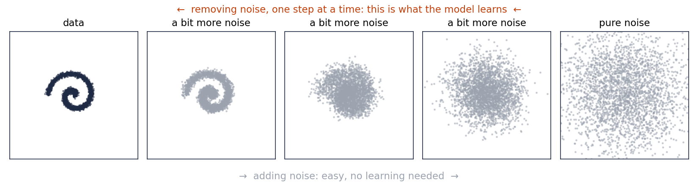
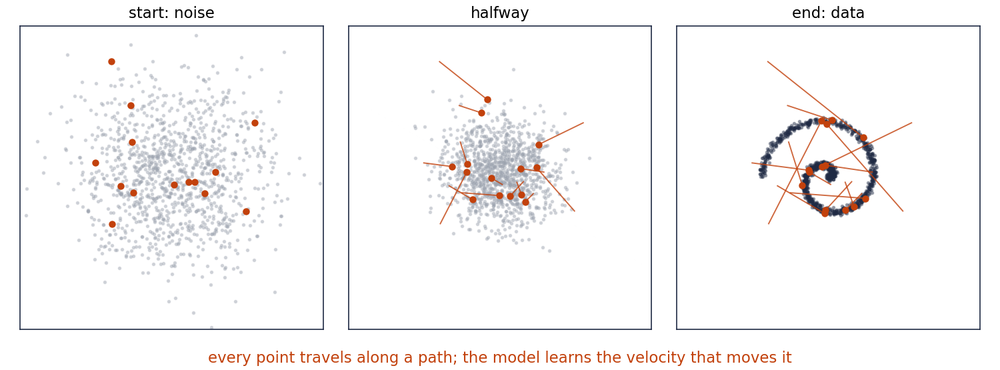

0. What is a generative model?¶
Read this before note 1. It has no equations. Its purpose is to give you a clear mental picture of what a generative model does, so that every time the phrase "generative model" comes up later, casually or formally, you know exactly what is meant.
The goal¶
We have a pile of examples of something: photographs, protein structures, EEG recordings, robot trajectories, sentences. We would like a machine that produces new examples of the same kind. Not copies of the ones we have, and not random garbage, but things that could plausibly have been in the pile.
That machine is a generative model. "Generative" because it generates; "model" because it is our imitation of whatever process produced the pile in the first place.
Two aspects of this goal deserve attention.
We never get to see the process. Nobody hands us the rule that produces faces or proteins. We only see its output, the pile of examples. So we cannot copy the process directly. We have to infer it from the examples, and the only sense in which we can succeed is statistical: our machine's outputs should be distributed the same way the examples are. Regions of "face space" where real photos are common should be regions our machine visits often; regions where real photos never appear should be regions it never visits. This is why the next few notes are about probability distributions. A generative model is a distribution we can draw from, and training means making that distribution match the data's.
The machine has to be random. If it always produced the same output it would not be generating, it would be storing. So somewhere inside there is a source of randomness. And that gives us the universal design.
The universal recipe¶
Every model in this series, and almost every generative model in use today, is built from the same two parts.
- Something easy to sample. Usually plain Gaussian noise: a vector of independent random numbers. A computer can produce as much of this as we like.
- A transformation that turns a noise vector into a data-like object. This is the part with the learnable knobs, in practice a neural network.

Generating means: draw noise, push it through the transformation, read off the output. Learning means: adjust the transformation until the outputs, taken together, are distributed like the data.
Here the "data" is a cloud of points in the plane shaped like a spiral. It will be the running example of the whole series, because in two dimensions we can see a distribution. An image model does exactly the same thing in a space with a million dimensions, one per pixel, where we cannot draw the picture. Whenever a later note says "the data", think of the spiral, and remember it is standing in for images.
The families of generative models differ only in what kind of transformation they use and, as a consequence, in how they can be trained. We will meet three. Here is a short description of each, without formulas.
Three kinds of transformation¶
One shot: variational autoencoders¶
The simplest option is a single neural network that takes a noise vector and outputs a data point in a single step. The difficulty is training it. To adjust the network you need to know, for a given real example, how likely the network was to have produced it, and for a one-shot network that question is hard to answer. Variational autoencoders (Part III) solve this by adding a second network that runs backwards, from data to a plausible noise vector, and using it to get an approximate answer. That approximation, called the evidence lower bound, will turn out to be the same tool that trains diffusion models. This is why VAEs are in the series at all: they are the smallest setting in which the key idea appears.
Many small steps: diffusion models¶
Diffusion models take a different route. Instead of going from noise to data in one jump, they do it gradually, and they use a trick to make the gradual version learnable.
The trick is to first study the opposite direction. Take a real data point and add a little noise to it. Then a little more. Then more. After enough steps, all structure is gone and what is left is pure noise. This forward direction is trivial: no learning, just adding random numbers.

Now train a network to undo one step: given a slightly noisy point, predict what the slightly-less-noisy version was. That is a well-posed regression problem with unlimited training data, because we can make noisy versions of real examples for free. Generation is then: start from pure noise, apply the "undo one step" network many times, and watch a data point emerge. The transformation from noise to data is the composition of all those small denoising steps.
When later notes say forward process, they mean adding noise. Reverse process means the learned removal. Noise prediction and score are two equivalent ways of describing what the network is asked to output at each step. All of this is Parts IV to VI.
Follow a velocity: flow models¶
The third family also moves gradually from noise to data, but it thinks of the motion as continuous rather than as discrete steps. Imagine each noise point as a particle. The model is a velocity field: at every location and every moment in time it says which way a particle there should move and how fast. Release the particles from the noise cloud, let them drift according to the field, and if the field was learned well, they settle into the shape of the data.

The learning problem is to find the velocity field. Flow matching (Part VII) does this by drawing straight lines from noise points to data points, reading off the velocity along those lines, and training the network to reproduce it.
Two things make flows important for us. First, because the motion is smooth and reversible, we can run it backwards and ask "which noise point produced this data point," which gives an exact likelihood, something diffusion models on their own cannot do. Second, and this is the central claim of the series, diffusion models are flow models in disguise. The many small denoising steps, in the limit of infinitely many of them, trace out a velocity field of exactly this kind. Parts V and VI are the bridge that makes that statement precise.
Generating on demand¶
So far the machine produces some data-like object, chosen at random. That is rarely what anyone wants. We want a face with glasses, a molecule that binds to this protein, an image matching this caption. The model has to be steerable.
There is a crude way and a good way. The crude way is to generate many samples and keep the ones we like. It works, but it wastes most of the effort, and for rare requests it never finishes.
The good way falls out of the gradual picture above. In both diffusion and flow models, a sample is not produced in one jump. It travels, from a noise point to a data point, over many steps or along a continuous path. And a travelling thing can be pushed while it moves. At each step, in addition to the learned "move toward the data" direction, add a small extra push in the direction "move toward the region I asked for". Over the whole journey the pushes accumulate, and the particle lands where we wanted, while the learned motion keeps it looking like real data the entire time.
Every method for steering a diffusion or flow model, and there are several with different names, is a version of this extra push. How large it should be, where it should come from, and what it costs in sample quality are the questions of Part VIII.
One remark for later. A system that moves on its own, plus a signal we inject at each moment to drive it toward a target, plus a measurement of how far it still is from that target, is the standard setting of control engineering. We will not need that vocabulary until Part VIII, but it is worth knowing now that the steering problem is not a new kind of problem. It is one that another field has thought about for a century, and its tools will apply.
So what do we mean by "learning"?¶
We said training means adjusting the transformation until the outputs are distributed like the data. To turn that into an algorithm we need to answer: how do we measure whether two distributions match, when we can only draw samples from each? Every training objective in this series, maximum likelihood, the evidence lower bound, denoising loss, flow matching loss, is one particular answer to that question. Notes 1 to 11 build the vocabulary needed to state the question and its answers precisely. That is the only reason the series starts with probability.
Words we will use casually¶
| Word | What it means in this series |
|---|---|
| generative model | a machine that turns random noise into new data-like objects; equivalently, a probability distribution we can sample from |
| sample | one output of the machine, or one example from the data pile |
| distribution | the overall pattern of where samples land: which regions are common, which are rare |
| noise | the easy-to-produce random input, almost always Gaussian |
| latent, latent code, seed | the specific noise vector that produced a specific output |
| transformation, generator, decoder | the learned map from noise to data |
| forward process | adding noise to data, step by step, until only noise remains |
| reverse process | the learned removal of noise, step by step, from noise to data |
| denoiser | the network that undoes one step of noise |
| score | the direction in which a noisy point should move to become more data-like; the reverse process follows it |
| velocity field, flow | the continuous version of the reverse process: a rule for how every point moves at every moment |
| guidance, conditioning | nudging the reverse process so that the output has a desired property |
| likelihood | how probable a given example is under the model; the quantity most training objectives try to raise |
Now on to note 1, where "a generative model is a random variable" is the first sentence, and where the spiral, the noise cloud and the transformation between them get their proper names.